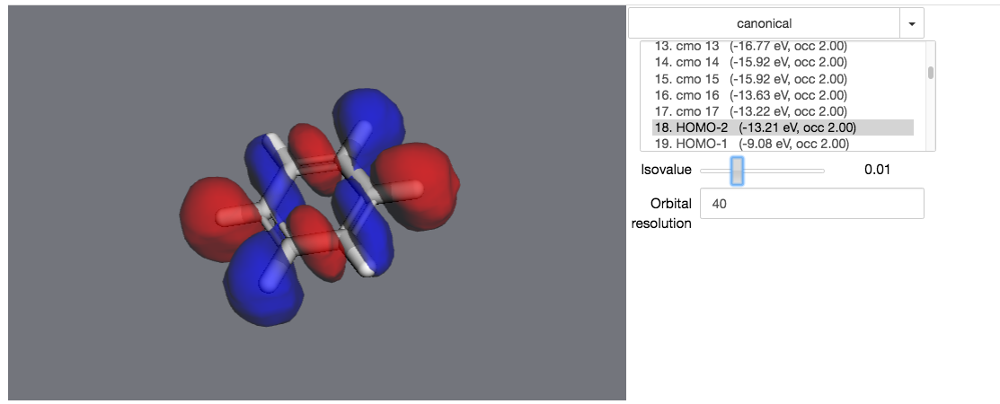

7. Visualization¶
7.1. Visualize molecular orbitals¶
First, you’ll need to calculate the molecule’s electronic structure using a quantum chemistry
model. Quantum chemistry models are a type of
Energy Model in MDT.
You can use iPython’s autocomplete to get a list of the available methods by typing
mdt.models. and then hitting the Tab key:

In this example, let’s set up a small molecule with a simple quantum chemistry model - restricted Hartree-Fock.
>>> mol = mdt.from_name('benzene')
>>> mol.set_energy_model(mdt.models.RHF(basis='6-31g'))
Next, we’ll run a calculation with this model - this will calculate several relevant properties for the molecule.
>>> mol.calculate()
>>> mol.potential_energy
-6275.56597497 eV
>>> mol.wfn
<ElectronicWfn (rhf/6-31g) of Molecule: benzene>
These properties are stored in a dict at mol.properties:
>>> mol.properties.keys()
['wfn', 'positions', 'mulliken', 'potential_energy']
Most relevant for our purposes, we’ve calculated the electronic state of the molecule and are ready to visualize it.
>>> mol.draw_orbitals()
In an actual notebook, you can use the controls on the right to control the visualization.
7.2. Maniuplate a 3D visualization¶
First, create a viewer. It will be rendered in your notebook when it’s the last object evaluated in a code cell.
>>> import moldesign as mdt
>>> from moldesign import units as u
>>> mol = mdt.from_pdb('3AID')
>>> viewer = mol.draw3d()
>>> viewer
At this point, the viewer will be drawn into your notebook. You can continue to manipulate it after it’s been drawn.
For starters, let’s turn all the waters purple.
>>> wateratoms = [atom for atom in mol.atoms if atom.residue.type == 'water']
>>> viewer.vdw(atoms=wateratoms, color='purple')

Next, let’s make that drug molecule really stand out with with a transparent sphere, an arrow, and a label:
>>> drug = mol.chains['A'].residues['ARQ401']
>>> r = drug.center_of_mass
>>> sphere = viewer.draw_sphere(position=r, radius=6*u.angstrom, opacity=0.5, color='green')
>>> arrow = viewer.draw_arrow(start=r+[0,0,26]*u.angstrom, end=r+[0,0,6]*u.angstrom, radius=3)
>>> label = viewer.draw_label(text="Here's the drug", position=r)
Maybe that’s too much - let’s remove the label and the sphere.
>>> viewer.remove(label)
>>> viewer.remove(sphere)